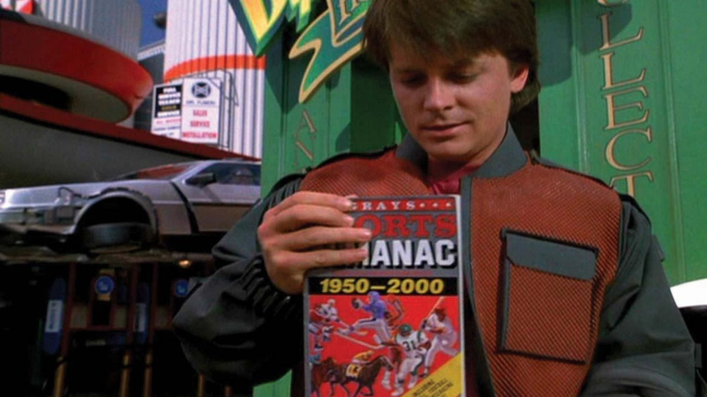

Never Too High, Never Too Low ft. The Greatest Sporting Miracle Ever
The 2015-2016 Premier League season was nothing short of a miracle.
It's commonly denoted as the greatest sporting story of all time.
On May 2, 2016, Leicester City were crowned champions of the top division of English football (soccer). A few months
prior, this was unthinkable. If you were to go back in time
to the beginning of the season and tell anyone
that Leicester
would win the title, they'd probably think
you're high.

If anyone was crazy enough to actually believe you, bookkeepers
were offering betting odds of 5000-1, or a 1/5000 chance, for Leicester to win it all.
If you bet $1, your payout would be $5001.
To put this into perspective,
The chances of
Kanye West becoming U.S. President in 2020, at time of writing, is 1/66.
The chances that you were born with each eye a different
colour is 1/150.
The chances that you will be struck by lighting in your lifetime
is 1/3000.
The chances for Leicester to win the title were 1/5000. And on May 2, 2016,
many bookmakers had to fork over millions of dollars in payouts. So much so,
that some vowed to never offer odds as high as 5000-1 ever again.
So, an underdog won something? What's the big whoop?
Well, there was something about the way the Leicester players and manager
handled the season that still reasonates with me in my day-to-day life.
You see, about 1-2 months into the season, Leicester were remarkably
still first in the league. Everyone expected it to just be luck, and
for them to fall down the table any game now. I very clearly
remember thinking the same thing to myself.
But, Leicester kept winning. I will always remember the
antics
of
Claudio Ranieri, the manager at the time.
At the beginning of the season, he set out the goal for Leicester
to achieve 40 points. This would have had them finish 17
th out of 20, just
barely avoiding relegation. A reasonable goal for their expectations.
After each game they won, until they reached the 40 point mark,
the post-match interviewer would always ask,
Surely, it's time to start targeting more than 40 points now?
And, sure enough, Claudio Ranieri would always respond with something like this,
40 points. I can’t change our project at the moment. Our goal right now is to maintain the Premier
League. Be solid with two feet firmly on the floor. 40 points.
Even when they were 1 win away from their target, the goal stayed the same.
And, of course, they reached the 40 point target midway through the season.
Even then, he and the team would
always stay composed.
The title is yours to win! How does it feel to be so close?
No matter how much they won, how close they got to
the title, the team never let it get in their heads.
Their responses were always along the lines of,
Just taking it one game at a time, and whatever happens, happens.
It was quite remarkable. At times, it seemed like they couldn't care
less about the end result. They were just doing their job, one
game at a time. Just completely unfazed by the media, attention, and
pressure.
Perhaps the one response which the players gave to
reporters post-match that stuck with me the most was
never get too high, never get too low.
This idea that, if things are going stupendously, be happy,
but move on. If things aren't going your way,
it's okay to be sad, but move on.
After every win and loss, the ability to stay so immensly
level-headed has stuck with me ever since.
Even if you have no interest in sports whatsoever,
we can all take something away from Leicester's accomplishment.
I started University in 2017, one year after Leicester won the title.
Since then, there's been countless ups and downs.
Good grades, bad grades.
Good jobs, bad jobs.
Good people, bad people.
Maybe I'm weird to think in this manner,
but I've been relatively happy with how I've been able to stay in control
emotionally when times get hectic. I think it's a
generally a
good way to go about life.
A big example of this is when internship recruiting season comes around,
typically coinciding with midterm exams.
I try to
keep things as private as possible. Sometimes, this is unavoidable, but I
try to nonetheless.
I don't even tell my parents until the very end.
When I was in the final stages with Google, my
mom asked me,
"So, when are you starting to apply for your next co-op?".
Whoops.
It's not that I don't like to tell them things.
It's just easier for me to stay level-headed without all
of the extra eyes.
The Google interview process is a bit of a hot mess.
It took over 4 months, including 5 total interviews.
Each one was a roller coaster, and going through it in
private was a big way that I was able to keep my emotions in check.
Day-by-day, interview-by-interview. Whatever happens, happens.
I was happy to come home with good news the following week.
Leicester finished the season with 81 points, a Premier League title, and
the greatest sports miracle of all time.
Never too high, never too low.